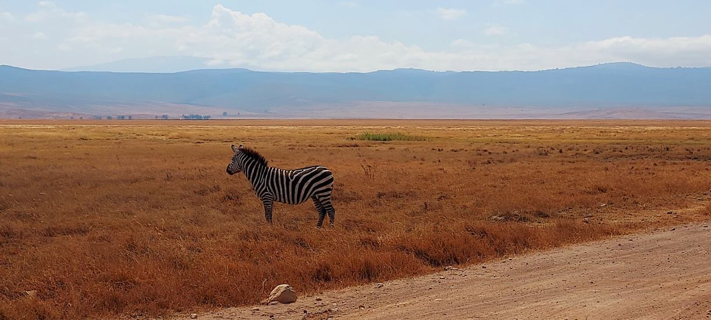

När solen går ner över horisonten och färgar himlen i guld och rött väcks känslan av hur mäktig och levande världen verkligen kan vara. Vi skapar resor som låter dig uppleva Afrikas själ på riktigt där man är i naturen, och med respekt för det vilda. Vi erbjuder även möjlighet att sova över ute i naturen, med säkerhet, och där man kan uppleva lejonens rytande i gryningen. Det här är mer än en destination. Det är ett äventyr du bär med dig för alltid.
Tanzania
Detta är vår favoritdestination att resa till inom Ad & Jo Scandinavia. Här kan du följa med på en resa genom Tanzanias mest storslagna landskap, från Serengetis oändliga vidder till Ngorongoro kraterns sluttningar och Tarangires floddalar. Här möter du savannens rytm, zebrans elegans och lejonens kraft, där varje ögonblick berättar sin egen historia.När solen går ner över horisonten och färgar himlen i guld och rött väcks känslan av hur mäktig och levande världen verkligen kan vara. Vi skapar resor som låter dig uppleva Afrikas själ på riktigt där man är i naturen, och med respekt för det vilda. Vi erbjuder även möjlighet att sova över ute i naturen, med säkerhet, och där man kan uppleva lejonens rytande i gryningen. Det här är mer än en destination. Det är ett äventyr du bär med dig för alltid.